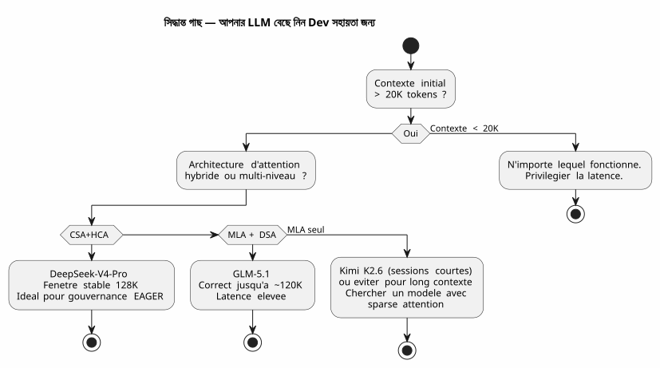

DeepSeek-V4-Pro, Kimi K2.6, GLM-5.1: দীর্ঘ প্রসঙ্গ ভাইব কোডিংয়ের পরীক্ষায় তিনটি LLM
Publié le 28 April 2026
- সন্দর্ভ : একটি পরীক্ষার ব্যাঙ্ক নয়, একটি নির্মাণক্ষেত্র
- আমার পরীক্ষার পরিবেশ
- মূল্যায়ন গ্রিড
- রাউন্ড ১ : Kimi K2.6 — ভুল শুরু
- Round 2 : GLM-5.1 — সম্মানযোগ্য যুদ্ধী
- Round 3 : DeepSeek-V4-Pro — যুদ্ধের মেশিন
- মুখোমুখি : টুলনামূলক মেট্রিক্স
- DeepSeek-V4-Pro কেন সফটওয়্যার ডেভেলপমেন্টে অগ্রসর হচ্ছে
- শেখানো পাঠ : কিভাবে আপনার LLM বাছাই করবেন Vibe Coding-এর জন্য
- এবং গাভার্নেন্স এজেন্ট সবই এতে কী?
- প্রযুক্তি উৎস
- নिष्कর্ষ: শিল্পীর বেছে নেওয়া
LLMs-দের যুদ্ধও একটি ডেভেলপারের টার্মিনালে লড়াই হয়। অকার্যকর আকাদেমিক বেঞ্চমার্কে নয়। বাস্তব জীবনে: ৩০,০০০ টোকেনের একটি প্রম্পট, AsciiDoc-এ একটি এজেন্ট শাসন, Gradle Kotlin DSL প্লাগইনগুলো ডিবাগ করতে এবং তিন هفته ধরে চলുന്ന সেশনগুলো। আমি আপনার জন্য DeepSeek-V4-Pro, Kimi K2.6 এবং GLM-5.1 টি পরীক্ষা করে দেখেছি। এটি নিশ্চয়, প্রযুক্তিগত সাবुतের সাথে।
- কটকটি
-
</think>
সন্দর্ভ : একটি পরীক্ষার ব্যাঙ্ক নয়, একটি নির্মাণক্ষেত্র
তিন সপ্তাহ আগে, আমি কাজ করছিলাম`codebase-gradle`, আমার meta-build system যা চারটি প্রকল্পের YAML কনফিগারেশনকে কেন্দ্রীভূত করে: একটি README PlantUML জেনারেটর, একটি AsciiDoc স্লাইড বিল্ডার, একটি স্ট্যাটিক JBake সাইট এবং একটি LLM চ্যাটবট। Opencode এজেন্ট, আমার AsciiDoc-এ এজেন্ট ফাইলের পদ্ধতিতে পরিচালিত, প্রতিটি সেশনের শুরুতে ~30K টোকেন EAGER কনটেক্সট লোড করত। — মוחלט নিয়ম, ব্যাকলগ, গত ১০ সেশনের ইতিহাস।
এই জমির উপরেই আমি তিনটি মডেলের সম্মুখীন
-
কিমি কে ২.৬(Moonshot AI, 1T প্যারামিটার / 32B সক্রিয়, 256K সর্বোচ্চ প্রেক্ষাপট, MLA) - GLM-5.1(Zhipu AI/Tsinghua, 744B প্যারামিটার / DSA, 200K সর্বোচ্চ কনটেক্সট) - DeepSeek-V4-Pro(DeepSeek, 1.6T প্যারামিটার / 49B সক্রিয়, 1M সর্বোচ্চ কনটেক্সট, CSA+HCA)
সবই Ollama ব্যবহার করে ক্লাউড সার্ভারে পরিবেশনিত, সবই thinking মোডে (বিচার পর্যায় সক্রিয়) চালু। লক্ষ্য : সঠিক কোড তৈরি করা, দীর্ঘ সেশনগুলোতে সামঞ্জস্য বজায় রাখা, এবং কন্টেক্সট ৮০K টোকেনের বেশি হলে হালুসিনেশন ঘটবেন না।
আমার পরীক্ষার পরিবেশ
Failed to generate image: PlantUML preprocessing failed: [From <input> (line 12) ]
@startuml
skinparam backgroundColor #FEFEFE
skinparam defaultTextAlignment center
skinparam wrapWidth 220
title টেস্ট পরিবেশ — সেশন Opencode × 3 LLMs
left to right direction
package "�🖥️ টার্মিনাল ডেভেলপার" #E8F5E9 {
rectangle "AGENT.adoc\n(নিয়ম, ব্যাকলগ)" as AG
rectangle "PROMPT_REPRISE\n(মিশন)" as PR
rectangle "INDEX.adoc
^^^^^
Syntax Error? (Assumed diagram type: component)
@startuml
skinparam backgroundColor #FEFEFE
skinparam defaultTextAlignment center
skinparam wrapWidth 220
title টেস্ট পরিবেশ — সেশন Opencode × 3 LLMs
left to right direction
package "�🖥️ টার্মিনাল ডেভেলপার" #E8F5E9 {
rectangle "AGENT.adoc\n(নিয়ম, ব্যাকলগ)" as AG
rectangle "PROMPT_REPRISE\n(মিশন)" as PR
rectangle "INDEX.adoc
(রোডম্যাপ)" as IDX
}
package "☁️ Ollama Cloud" #BBDEFB {
rectangle "DeepSeek-V4-Pro\n1.6T / CSA+HCA" as DV4
rectangle "Kimi K2.6\n1T / MLA" as KIMI
rectangle "GLM-5.1\n744B / MLA+DSA" as GLMG
}
package "�⚙️ কোডবেস Gradle" #FFF9C4 {
folder "buildSrc/" {
file "codebase.kt"
file "readme.kt"
file "site.kt"
file "slider.kt"
file "snapshot.kt"
}
file "build.gradle.kts
(947 লাইন)"
file "embeds.yml"
}
AG --> DV4 : Sessions 1-8 ✅
AG --> KIMI : Sessions 9-10 ⚠️
AG --> GLMG : Sessions 11-13 ⚠️
DV4 --> "কোডবেজ" : "TDD, refactoring
snapshot"
KIMI --> "কোডবেজ" : "ক্ষয়
৬০K টোকেন থেকে"
note bottom of GLMG
Meilleur que Kimi
mais latence +
DSA moins robuste
que CSA+HCA
end note
@enduml
প্রতিটি সেশন প্রায় ৩০K টোকেন EAGER কনটেক্সট দিয়ে শুরু`AGENT.adoc`(২৮৭ লাইন),PROMPT_REPRISE.adoc(51 লাইন),.agents/INDEX.adoc(218 লাইন),LAZY_EAGER_ESSENTIALS.adoc(50 লাইন). প্রসঙ্গ দ্রুতভাবে বৃদ্ধি পাচ্ছিল যোগাযোগের সাথে — একটি সাধারণ ১০ বার্তা যুক্ত সেশন প্রম্পটের সংচিত অংশে ১৫-২০K টোকেন যোগ করত।
মূল্যায়ন গ্রিড
আমি প্রতিটি মডেলকে সাহায্যপ্রদ সফটওয়্যার উন্নয়নের জন্য অত্যন্ত গুরুত্বপূর্ণ চার অক্ষে মূল্যায়ন করেছি।
অক্ষ |
নির্দিষ্ট মানদণ্ড |
দীর্ঘ প্রেক্ষাপটের সামঞ্জস্য |
এজেন্টটি 40 বার্তা আগে নির্ধারিত কনভেনশনগুলো মনে রাখে কি? |
উৎপন্ন কোডের গুণমান |
কোডটি প্রথমবার কম্পাইল হয় কি? এটি বিদ্যমান প্যাটার্নগুলোকে অনুসরণ করে কি? |
আর্কিটেকচারাল যুক্তি |
এজেন্ট কি আমাকে পুনরায় ব্যাখ্যা না দিয়েও মডিউলের মধ্যে সম্পর্ক বুঝে? |
বিশ্রম্ভের প্রতিরোধ |
একটি एजেন্ট কত টোকেন পর থেকে অনুপস্থিত API বা ক্লাসকে আবিষ্কৃত করা শুরু করে? |
এবং একটি ঘরে তৈরি সিন্থেটিক মেট্রিক : leপুন:YESের কোএফিশিয়েন্ট(আমি যে সময় এজেন্টকে সংশোধনে ব্যয় করি, তার চেয়ে বেশি কোড লিখে তার সাথে কাজ করার সময়)
রাউন্ড ১ : Kimi K2.6 — ভুল শুরু
কিমি K2.6 আমার প্রথম পছন্দ ছিল। এর বেঞ্চমার্ক SWE-Bench Verified (80.2) এবং Terminal-Bench 2.0 (66.7) চমৎকার। এর MLA আর্কিটেকচার দীর্ঘ অনুক্রমে ভাল কার্যকারিতা নিশ্চিত করে।
সেশন ৯ : উজ্জ্বলতা
Kimi-এর সাথে প্রথম সেশন. কাজ: পদ্ধতিটি বাস্তবায়ন করা`resolveActiveKey()মধ্যে`codebase.kt— প্রসঙ্গ 30K টোকেন, Kimi দ্রুত যুক্তি বোঝায়, কী মেয়াদ শেষ হওয়ার ব্যবস্থা সহ পরিষ্কার কোড তৈরি করে।
fun resolveActiveKey(
cfg: CodebaseConfiguration,
logger: Logger,
cliProvider: String? = null,
cliAccount: String? = null,
cliKey: String? = null
): NamedApiKey? {
// Résolution provider → compte → clé avec CLI override
// Kimi a parfaitement compris la chaîne de priorité
}কোডটি কম্পাইল হয়। ৭টি পরীক্ষা পাস হয়। আমি অশঙ্কিত।
Session 10 : নীরব নৌদুর্ভিক্ষ
দ্বিতীয় সেশন। প্রেক্ষাপট ~90K টোকেনে উঠে যায় আদান-প্রদানের মাধ্যমে। আমি Kimi-কে একটি AsciiDoc স্ন্যাপশাট যোগ করার অনুরোধ করি, যা লিখনের আগে গোপনীয় তথ্য들은 বেনামী করে।
এখানেই সবই ভুল হয়ে যায়। Kimi অস্তিত্ব নেই এমন ক্লাসগুলি আবিষ্কার করতে শুরু করেন। তিনি আমাকে প্রস্তাব করেন`AnonymizedObjectMapper`— একটি নকল শ্রেণি. সে ভুল বুঝে`ReadmeYmlAnonymizer` et CodebaseYmlAnonymizer. সে আমাকে ইম্পোর্ট করার পরামর্শ দেন`com.fasterxml.jackson.anonymize.*`— একটি প্যাকেজ যা কখনো বিদ্যমান ছিল না।
খারাপটি: তার চিন্তার পর্যায়ে, আমি দেখি যে সে ভুল প্রিমিশ ভিত্তি করে তর্ক গঠন করছে। সে 'স্মরণ করছে' যা`GitConfig`একটি খেত আছে`anonymizedToken`— না, এটি`resolvedToken()ও অ-aropਣ করে ke`SiteYmlAnonymizer`একটি পদ্ধতি`maskSupabaseCredentials()— যা বিদ্যমান নেই।
_ এটি কোনো বাগ ছিল না। এটি সামঞ্জস্যের ধীরে-धीरे ধ্বংস ছিল। যেন প্রতিটি টোকেন কনটেক্সটে যোগ করা হলে, প্রথম ৩০,০০০ টি টোকেনের মেমোরি আরও কমিয়ে যায়। _
আমি দুটি সেশনের পরে Kimi-কে বন্ধ করি। নিরীক্ষণ স্পষ্ট: MLA ভালোভাবে KV ক্যাশে সংকুচিত করে, কিন্তু ফাইন-গ্রেইন্ড স্পার্স সিলেকশন মেকানিজম ছাড়াও, অটেনশন মেকানিকালি 60K টোকেনের বেশি পর থেকে নিশ্চল হয়ে যায়। প্রতিটি টোকেন দূরবর্তী প্রেক্ষাপটকে কম বেশি ভালোভাবে দেখে না — এবং শোর দিয়ে খালি জায়গাগুলো পূরণ করা শুরু করে।
Round 2 : GLM-5.1 — সম্মানযোগ্য যুদ্ধী
GLM-5.1 একটি ভিন্ন আর্কিটেকচারে এসেছে : বেস মডেলের জন্য MLA, এবং তারপর continued pre-training DSA (DeepSeek Sparse Attention) দিয়ে — একটি হালকা ইন্ডেক্সার যা পুরো ইতিহাসের মধ্যে ডায়নামিকভাবে শীর্ষ ২০৪৮ প্রাসঙ্গিক টোকেন নির্বাচন করে।
আর্কিটেকচার : ডিএসএ শুধুমাত্র MLA-এর বিরুদ্ধে
বৈষম্য মৌলিক। যেখানে Kimi ইতিহাসকে একটি একক ল্যাটেন্ট স্পেস-এ সংকুচিত করে (এবং ধীরে ধীরে প্রাসঙ্গিক তথ্যকে ভেদ করার ক্ষমতা হারিয়ে যায়), GLM একটি post-entraînement ইন্ডেক্সার আটকে দেয় যা স্পষ্টভাবে একটি sparse নির্বাচন করে।
Failed to generate image: PlantUML preprocessing failed: [From <input> (line 9) ]
@startuml
skinparam backgroundColor #FEFEFE
skinparam defaultTextAlignment center
title অ্যাটেনশন আর্কিটেকচার — MLA বনাম MLA+DSA
left to right direction
rectangle "**Kimi K2.6 — MLA শুদ্ধ**" as MLA #FFCDD2 {
rectangle "KV Cache
^^^^^
Syntax Error? (Assumed diagram type: class)
@startuml
skinparam backgroundColor #FEFEFE
skinparam defaultTextAlignment center
title অ্যাটেনশন আর্কিটেকচার — MLA বনাম MLA+DSA
left to right direction
rectangle "**Kimi K2.6 — MLA শুদ্ধ**" as MLA #FFCDD2 {
rectangle "KV Cache
সম্পূর্ণ" as KV1
rectangle "কম্প্রেশন
লেটেন্ট" as CL1
rectangle "ডিকোডিং
উপর লেটেন্ট স্পেস" as DL1
KV1 --> CL1
CL1 --> DL1
note bottom of DL1
⚠️ Au-delà de 60K tokens :
perte de discrimination
end note
}
rectangle "GLM-5.1 — MLA + DSA" as DSA #C8E6C9 {
rectangle "KV Cache
সম্পূর্ণ" as KV2
rectangle "কম্প্রেসন\nঅস্পষ্ট (MLA)" as CL2
rectangle "হালকা ইন্ডেক্সার
(DSA, top-k=2048)" as IL
rectangle "ডিকোডিং
নির্বাচিত টোকেনের জন্য" as DL2
KV2 --> CL2
CL2 --> IL
IL --> DL2
note bottom of DL2
✅ "নির্মাণে হারাবিহীন"
Sélection explicite
des tokens pertinents
end note
}
MLA --> DSA : "গাইন : স্পার্স সিলেকশন
যে দ্রাবণকে হ্রাস থেকে বাঁচে"
@enduml
প্রযুক্তিগত প্রতিবেদনটি স্পষ্টভাবে বলে : DSA "lossless by construction" — SWA (pattern search), Gated DeltaNet বা SimpleGDN এর মতো বিকল্পগুলির বিপরীতে, যা RULER@128K-এ ৫.৬৯ পয়েন্ট পর্যন্ত ক্ষতি করে।
সেশন ১১-১৩ : দৃঢ় কিন্তু বিষন্নকর
GLM-5.1 দূরত্বটি ভালভাবে ধরে রাখে। সেশন ১১ (~৬০ হাজার টোকেন)‑এ তা সামঞ্জস্যপূর্ণ বানায়। তা একটি`SnapshotManager`কর্মক্ষম এবং চারটি অ্যাননিমাইজারের সঠিক ব্যবস্থাপনার সঙ্গে।
কিন্তু লেটেন্সি একটি সমস্যা। DSA প্রতিফলন পর্যায়গুলো শুদ্ধ MLA-এ 비해 ভারী — ইন্ডেক্সারকে প্রতিটি পর্যায়ে ইতিহাস পুন: স্ক্যান করতে হয়। কিমি দিয়ে 8 সেকেন্ডে হউকো উত্তর এখন GLM দিয়ে 15 সেকেন্ড লাগে। ৩০‑বার্তার সেশনে এটি মনে পড়ে।
এবং তারপরে সূক্ষ্ম ত্রুটি আছে। GLM কিমি মতো বিপর্যয় করবে না — কিন্তু এটি নামিং ত্রুটি করে। এটি বুলায়`toAnonymizedYaml()যে পদ্ধতিটি ডাকা উচিত`anonymize(). সে উল্টে দেয়`loadReadmeConfiguration()` et loadCodebaseConfiguration()`এর মধ্যে`renderFileSection(). এগুলো হালুসিনেশন নয়, এগুলো সতলের ভুলবোঝা — কিন্তু উৎপাদনে, একটি সতলের ভুলবোঝা একটি বিল্ড ভাঙতে পারে।
আমি GLM-এ তিন সেশন নিয়েছিলাম। তা Kimi থেকে নিশ্চয়ই ভাল। কিন্তু নামের বিবরণে دستیানুশীলন সেশনের তিন বার করা, এটা ক্লান্তikorায়।
Round 3 : DeepSeek-V4-Pro — যুদ্ধের মেশিন
DeepSeek-V4-Pro তিনদের মধ্যে সবচেয়ে উত্সাহী আর্কিটেকচারের সাথে আসে : একটি হাইব্রিড সিস্টেম যা দুটি পূরকোপর্যাত্য মনোযোগ মেকানিজমকে সমন্বয় করে।
আর্কিটেকচার: CSA + HCA, ডাবল ফাইলে
Failed to generate image: PlantUML preprocessing failed: [From <input> (line 9) ]
@startuml
skinparam backgroundColor #FEFEFE
skinparam defaultTextAlignment center
skinparam wrapWidth 180
title DeepSeek-V4-Pro — হাইব্রিড CSA + HCA আর্কিটেকচার
left to right direction
rectangle "KV Cache
^^^^^
Syntax Error? (Assumed diagram type: class)
@startuml
skinparam backgroundColor #FEFEFE
skinparam defaultTextAlignment center
skinparam wrapWidth 180
title DeepSeek-V4-Pro — হাইব্রিড CSA + HCA আর্কিটেকচার
left to right direction
rectangle "KV Cache
১ মিলিয়ন টোকেন" as KV #E3F2FD
rectangle "CSA
সঙ্কুচিত স্পার্স এটেনশন" as CSA #C8E6C9 {
rectangle "কম্প্রেশন
m টোকেন → 1" as CC
rectangle "স্পার্স আটেনশন\n(DSA, top-k)" as SA
CC --> SA
note bottom of SA
Attention locale fine
+ sélection sparse
end note
}
rectangle "HCA
অত্যধিকভাবে সংকুচিত মনোযোগ" as HCA #BBDEFB {
rectangle "অতিশয় সংকোচন
m' >> m → 1" as ECC
rectangle "ঘন মনোযোগ\nশেষবাকি" as EDA
ECC --> EDA
note bottom of EDA
Contexte global
+ connexions longue distance
end note
}
rectangle "ফিউশন
হাইব্রিড" as FUSION #FFF9C4
rectangle "ডিকোডিং
একসঙ্গত" as DEC #FFE0B2
KV --> CSA : Précision locale
KV --> HCA : Vision globale
CSA --> FUSION
HCA --> FUSION
FUSION --> DEC
@enduml
দুই স্তরের সঙ্কোচন, দুই গ্র্যানুলারিটি মনোযোগ :
-
CSA: কেভি ক্যাশকে সবগুলো সংকুচিত করে`m`টোকেনগুলো, তারপর একটি স্পার্স অটেনশন (DeepSeek Sparse Attention) প্রয়োগ করে — শুধুমাত্র সংকুচিত ইনপুটগুলোর শীর্ষ k টি পরামর্শ দেওয়া হয়। সঠিক, স্থানীয়, কার্যকর। - HCA: সংকোচন অতিধিক (গুণক`m'`অনেক বড়`m`), সংকুচিত অবশেষে ঘন অটেনশন — বিশ্বব্যাপী সংযোগকে চতুর্গুণ বিস্ফোরক ছাড়াই রাখুন।
ফলাফল: 1M টোকেনে, DeepSeek-V4-Pro শুধু কীটো খরচ করে27% ইনফারেন্স FLOPs et KV cache-র আকারের ১০%DeepSeek-V3.2-র সাথে তুলনা করলে পূর্ববর্তী মডেল।
বিশেষত, টেকনিকাল রিপোর্ট (ফিগার 9) ঘোষণা করে : "_Retrieval performance remains highly stable within a 128K context window."
সেশন ১-৮ : উপশম
আমি DeepSeek-V4-Pro-এর সাথে আট সেশন গিয়েছি উপর`codebase-gradle`. আট সেশন কোনো হ্যালুসিনেশন নেই, কোনো आविष्कৃত শ্রেণি নেই, কোনো নামাঙ্কন বিভ্রান্তি নেই।
সেশন ১ : প্রয়োগের`CodebaseYmlConfig` et CodebaseYmlAnonymizer. 350টি কোটলিন লাইন, ইনলাইন টেস্ট, সবকিছু কম্পাইল হয়। সেশন 4: যোগ করা`SnapshotManager`ে ট্রি ভিউ, ফাইল সংগ্রহ, প্রতিটি ফাইলের জন্য AsciiDoc রেন্ডারিং. ২৭৯ লাইন, শून্য ত্রুটি. সেশন ৭ : ডিবাগের`renderFileSection()`যে পরিচালনা করতে ছিল চার ভিন্ন ধরনের অ্যানোনিমাইজারকে সমাধানের কোনো অস্পষ্টতা ছাড়া। তিন বার্তায় সমাধান।
Latency Kimi-র চেয়ে বেশি — ভাবা মোডে প্রতি উত্তরে প্রায় ১০-১২ সেকেন্ড লাগে। কিন্তু সংশোধনেরहार প্রায় শূন্য। আমি এজেন্টের ভুলগুলো ঠিক করতে সময় ব্যয় না করি। আমি সাথে তাকে কোড করি।
নিষ্পত্তি পরীক্ষা: 100K টোকেনের রিফ্যাক্টরিং
সেশন 8-এ, সংযোজিত প্রেক্ষাপত ১০০K টোকেনের বেশি হয়ে গেছে। আমি একটি গুরুতর রিফ্যাক্টরিং চাই: চারটি ইন্ডলাইন যাচাই কাজ বের করা du`build.gradle.kts`JUnit5 পরীক্ষা ফাইলগুলো দিকে মধ্যে`buildSrc/src/test/`.
এজেন্ট একটি তিন-ফেজ পরিকল্পনা proposta Kore:
-
বিদ্যমান কেসের মাইগ্রেশন দিয়ে পরীক্ষার ক্লাস তৈরি করুন
-
JUnit5 এবং Kotest নির্ভরতা যোগ করুন`buildSrc/build.gradle.kts`
-
ইনলাইন কোডটি মুছুন`build.gradle.kts`
পরিকল্পনা সঠিক। সম্পাদন পরিষ্কার। এটি আমার দ্বারা মিস করা একটি এজ কেসও চিহ্নিত করে: ডুপ্লিকেট Jackson নির্ভরতা মধ্যে`buildscript {}` et `buildSrc/build.gradle.kts`যে গুলোকে মাইগ্রেশনের সময় একত্রিত করা উচিত।
100K টোকেন প্রসঙ্গ, এবং এজেন্ট মনে করে যে`CodebaseYmlAnonymizer.TOKEN_MASK`আছে`"*"`, যে`GitConfig.resolvedToken()একটি extension function সংজ্ঞায়িত`readme.kt, এবং যে`SnapshotManager.PRUNED_DIRS`বর্জন করে`build`, .gradle et .git.
এটাই পার্থক্য।
মুখোমুখি : টুলনামূলক মেট্রিক্স
| মাপদণ্ড | Kimi K2.6 | GLM-5.1 | DeepSeek-V4-Pro |
|---|---|---|---|
সর্বোচ্চ প্রেক্ষাপট |
২৫৬ হাজার |
২০০ হাজার |
1M |
অ্যাটেনশন মেকানিজম |
MLA শুধা |
MLA + DSA |
CSA + HCA হাইব্রিড |
মোট প্যারামিটার |
1T |
744B |
১.৬টি |
সক্রিয় সেটিংস |
32B |
অপ্রকাশিত |
49B |
প্রচলিত অপক্ষয় সীমা |
এই টেক্সটটি বাংলায় অনুবাদ করা হয়েছে, ব্যাকটিক span-গুলো ( |
(Empty) |
~128K tokens |
অতিক্রমে আচরণ |
ব্যাপক হ্যালুসিনেশন |
সতही বিভ্রান্তি |
ধীর ও প্রগতigor ক্ষয় |
স্থিতিশীলতা NIAH |
অপ্রকাশিত |
100% @128K (DSA) |
স্থির ১২৮K পর্যন্ত (চিত্র ৯) |
MRCR @128K |
অপ্রকাশিত |
প্রকাশিত নয় |
Gemini 3.1 Pro-কে বেশি |
ত্যাগের আগে আয়োজিত সেশন |
2 |
3 |
8 (এবং চলছে) |
সংশোধনের সময় / কোডের সময় |
60% |
30% |
<5% |
গড় বিলম্ব (mode think) |
8 s |
15 s |
11 s |
বিশ্বাসের গুণাঙ্ক* |
2/10 |
6/10 |
9/10 |
*বিশ্বাসের গুণক = আমার ক্ষমতার বিষয়ক মাপ, যা এজেন্টের কোড ও কমিটকে লাইন-বা-লাইন পর্যালোচনা ছাড়া নেয়.
Failed to generate image: PlantUML preprocessing failed: [From <input> (line 16) ] @startuml skinparam backgroundColor #FEFEFE skinparam defaultTextAlignment center title তুলনামূলক রেডার — 3 LLMs সাহায্যপূর্ণ সফটওয়ার উন্নয়নে legend right |= Couleur |= Modèle | | <#FF5252> | Kimi K2.6 | | <#FFC107> | GLM-5.1 | | <#4CAF50> | DeepSeek-V4-Pro | endlegend rectangle " " as space #FFFFFF rectangle "সামঞ্জস্য 80K+ টোকেন" as coh #F5F5F5 ^^^^^ Syntax Error? (Assumed diagram type: activity) @startuml skinparam backgroundColor #FEFEFE skinparam defaultTextAlignment center title তুলনামূলক রেডার — 3 LLMs সাহায্যপূর্ণ সফটওয়ার উন্নয়নে legend right |= Couleur |= Modèle | | <#FF5252> | Kimi K2.6 | | <#FFC107> | GLM-5.1 | | <#4CAF50> | DeepSeek-V4-Pro | endlegend rectangle " " as space #FFFFFF rectangle "সামঞ্জস্য 80K+ টোকেন" as coh #F5F5F5 rectangle "গুণমান কোড" as qual #F5F5F5 rectangle "তর্ক স্থাপত্য" as arch #F5F5F5 rectangle "প্রতিরোধ ভ্রমণ" as hall #F5F5F5 rectangle "গতি (ডেভেলপারের অভিজ্ঞতা)" as speed #F5F5F5 rectangle "জ্ঞান Gradle/Kotlin" as kg #F5F5F5 rectangle "সংশোধনের\nহার" as corr #F5F5F5 coh --> qual qual --> arch arch --> hall hall --> speed speed --> kg kg --> corr note top of coh Kimi ████░░░░░░ 4/10 GLM ██████░░░░ 6/10 DeepSeek █████████░ 9/10 end note note top of qual Kimi ███████░░░ 7/10 (sous 60K) GLM ████████░░ 8/10 DeepSeek █████████░ 9/10 end note note top of arch Kimi █████░░░░░ 5/10 GLM ███████░░░ 7/10 DeepSeek █████████░ 9/10 end note note top of hall Kimi ██████░░░░ 6/10 → ██░░░░░░░░ 2/10 (> 60K) GLM ███████░░░ 7/10 DeepSeek █████████░ 9/10 end note note top of speed Kimi █████████░ 9/10 GLM ██████░░░░ 6/10 DeepSeek █████░░░░░ 5/10 end note note top of kg Kimi ███████░░░ 7/10 GLM ███████░░░ 7/10 DeepSeek █████████░ 9/10 end note note top of corr Kimi ██░░░░░░░░ 2/10 (beaucoup de corrections) GLM █████░░░░░ 5/10 DeepSeek ██████████ 10/10 (presque rien à corriger) end note @enduml
DeepSeek-V4-Pro কেন সফটওয়্যার ডেভেলপমেন্টে অগ্রসর হচ্ছে
DeepSeek-V4-Pro er uttamata ekta karan karan nei — ekta milon :
CSA+HCA আর্কিটেকচারটি কোডের জন্য তৈরি করা হয়েছে।
সাহায্যপ্রদানকৃত সফটওয়্যার উন্নয়ন একটি অতিশয় ব্যবহার ক্ষেত্র দীর্ঘ-কনটেক্সট মনোযোগের জন্য। আপনার দরকার: - স্থানীয় নির্ভুলতা (এই ক্লাস কি থেকে উত্তরাধিকার পায়? এই পদ্ধতি কোথায় সংজ্ঞায়িত?) →CSA - বিশ্বদর্শন (এই মডিউল কেন বিদ্যমান? চारों অননামীকারী কীভাবে মিথস্ক্রিয়া করেন?) →HCA
Kimi মাত্র MLA-সাথে স্থানীয় নির্ভুলতা পরিচালনা করে কিন্তু 60K-এর পর বিশ্বদৃষ্টি হারায়। GLM DSA-সাথে বিশ্বদৃষ্টি উন্নয়ন করে কিন্তু একমাত্র স্তরে থাকে। DeepSeek স্পষ্টভাবে দুটোকে একত্র করে।
2. EAGER প্রেক্ষাপট তার আরামকাজের জোন
আমার গবর্নেন্স সিস্টেম শুরুতে ~30K টোকেন নিয়ম ও ব্যাকলোড লোড করে। 128K-এ স্থিতিশীল উইন্ডো থাকলে, DeepSeek-এ সেশন বিনিময়ের জন্য ~100K টোকেন মার্জিন আছে। এটি কিমি যে degrade না করেই পরিচালনা করতে পারে তার ৩ থেকে ৪ গুণ বেশি।
_ 128K-এর নিখুঁত স্থিতিশীলতা উইন্ডো আমার প্রয়োজরের সাথে ঠিকভাবে মেলে: 30K EAGER + 70K Exchange = 20-30 বার্তার উৎপাদক সেশন, কখনো গ্রীন জোনের বাইরে যাওয়া না। _
৩. গুণমান/অবগাহন অনুপাত প্রবাহের জন্য সর্বোত্তম
হ্যাঁ, DeepSeek-V4-Pro Kimi (11s vs 8s) এর চেয়ে ধীর। কিন্তু একটি কাজের মোট সময় অনেক কম, কারণ আমি এজেন্টের ভ্রান্তি সংশোধনে ২০ মিনিট খर्च করি না।
ডেভেলপারটি একটি উত্তরের লেটেন্সি মাপে না। তিনি "আমি প্রশ্ন করি" এবং "কোডটি আমার রেপোতে আছে এবং এটি কাজ করছে" এর মধ্যে সময় মাপে। এই মেট্রিকের ভিত্তিতে, DeepSeek-V4-Pro তিনজনের মধ্যে সবচেয়ে দ্রুত।
শেখানো পাঠ : কিভাবে আপনার LLM বাছাই করবেন Vibe Coding-এর জন্য
একসারি রঙ্কিং বাইরে, এই অভিজ্ঞতা আমাকে শিখিয়েছে যে কোনো বেঞ্চমার্কে উल्लékিত নয় এমন মানদণ্ডে LLM‑কে সহায়ক সফটওয়্যার ডেভেলপমেন্টের জন্য মূল্যায়ন করা যায়।
-
আর্কিটেকচারটি দেখুন, দেখুন, ঘোষিত প্রেক্ষাপটের আকার নয়— একটি মডেল যা ২৫৬K কন্টেক্স ঘোষণা করে কিন্তু শুধু একটি MLA আছে, তা kimi-এর মতো শেষ হবে: তত্ত্বগতভাবে সক্ষম, ব্যবহারিকভাবে ৬০K এর বাইরে ব্যবহার করা যায় না।
-
আপনার প্রেক্ষাপটে পরীক্ষা করুন, একটি সাধারণ বেঞ্চমার্কে নয়আমার প্রথম ৩০K টোকেনের ASCII DOC প্রম্পটে absoluto নিয়ম এবং ব্যাকলগ আছে, যা HLE বা AIME প্রশ্নের সাথে কোনো संबंध নেই।
-
�যদি গুণমান অনুসরণ করে, তাহলে ল্যাটেন্সি শত্রু নয়।— একটি ধীর মডেল যা সঠিক কোড তৈরি করে একটি ত্বরিত মডেলের চেয়ে দ্রুত যা ভুল কোড তৈরি করে।
-
পাবলিক টেকনিকাল রিপোর্ট নেই এমন মডেলগুলো থেকে সতর্ক থাকো— যদি দলটি তার দৃষ্টি আর্কিটেকচারকে ডকুমেন্ট না করে, তাহলে তা বোঝায় যে তিনি দীর্ঘ संदर्भে তার কর্মক্ষমতায় আস্থা রাখেন না।

এবং গাভার্নেন্স এজেন্ট সবই এতে কী?
এই অভিজ্ঞতা যে বিন্দুটি আমি আমার ইগার/লেজি শাসনbarsা গবেষণা থেকে প্রতিবদ্ধি করছি তা যাচাই করে:LLM-এর গুণমান এবং শাসনগত গুণমান গুণফলমূলক, না যোগমূলক।
Kimi K2.6-এর সাথে আমার শাসন নিখুঁত ছিল — কিন্তু মডেলটি তথ্যটি জুড়ে দিল। ফল: নিখুঁত শাসন × হ্যালুসিনেশন = শূন্য।
DeepSeek-V4-Pro-এর সাথে, EAGER (30K টোকেন নিয়ম) + LAZY (সেশন আর্কাইভ, টেকনিক্যাল রেফারেন্স) + Hot/Warm/Cold (ঘূর্ণিঝর ব্যাকআপ) শাসন একটি ইকোসিস্টেম তৈরি করে যেখানে প্রতিটি স্তর অন্যটিকে শক্তিশালী করে। এজেন্টের mắtের সামনে নিয়ম থাকে (EAGER), তারা ইতিহাস দেখতে পারে (LAZY), এবং ব্যাকআপ ঘূর্ণিঝরের কারণে কনটেক্সট কখনো স্যাচোরেট হয় না।
_ শাসনহীন ভালো LLM হলো স্টিয়ারিং ছাড়া ফের拉 ডি রের ইঞ্জিনের মতো। ভালো শাসন কিন্তু ভালো LLM ছাড়া, ইঞ্জিন ছাড়া স্টিয়ারিং চাকারের মতো। DeepSeek-V4-Pro + আমার শাসন এজেন্ট = প্রথমবার আমি মনে হচ্ছি আমি চালাচ্ছি। _
রোটেশনাল ব্যাকআপ মেকানিজম (১০ সেশনে প্রতি বা >500 EAGER লাইনে রোটেশন) একটি মডেলের সাথে অর্থ খুঁজে পায় যেটি 128K কনটেক্সট ধারণ করে: 10 সক্রিয় সেশনের স্লাইডিং উইন্ডো কনটেক্সটকে তাজা রাখে, ক্ষয়াঞ্চলকে কখনো অতিক্রম না করে।
প্রযুক্তি উৎস
আমি আমার আনুভবিক অভিজ্ঞতাকে সরকারি প্রযুক্তিগত রিপোর্টের সাথে মেশে আমার পর্যবেক্ষণ যাচাই করলাম:
-
DeepSeek-V4 Technical Report — PDF সংগ্রহ করা হয়েছেhttps://huggingface.co/deepseek-ai/DeepSeek-V4-Flash[HuggingFace]. অংক ৯ : \"প্রাপ্তি কর্মক্ষমতা 128K প্রসঙ্গ উইন্ডোর মধ্যে খুবস্থায়ী থাকে। 128K চিহ্নের বাইরে কর্মক্ষমতার কমী দৃশ্যমান হলে, 1M টোকেনে মডেলের পুনরুদ্ধার ক্ষমতা অসাধারণভাবে শক্তিশালী থাকে।\" CSA+HCA আর্কিটেকচার নথিভুক্ত অংশ 2.3.
-
*GLM-5 টেকনিকাল রিপোর্ট*https://arxiv.org/abs/2602.15763[arXiv:2602.15763]. DSA সংশ্লিষ্ট অবিরাম প্রি-ট্রেইনিংয়ের মাধ্যমে প্রবর্তিত হয়, "lossless by construction"। অধিকতম কন্টেক্সট 202,752 টোকেন। টেবিল ৩/৫/৬ দীর্ঘ-কনটেক্সট কর্মক্ষমতা Vs বিকল্পগুলো নথিভুক্ত করে (SWA, গেটেড ডেলটানেট, সিম্পল-GDN)।
-
কিমি K2.6 মডেল কার্ড —https://huggingface.co/moonshotai/Kimi-K2.6[HuggingFace]. MLA, 256K সর্বোচ্চ কনটেক্সট। discard-all রণনীতি সীমার পাশে এজেন্টিক কাজে (দীর্ঘ কনটেক্সটে MLA-এর অনুশীলনিক সীমা implicitভাবে নিশ্চিত করে)
-
*Kimi K2 টেকনিকাল রিপোর্ট*https://arxiv.org/abs/2507.20534[arXiv:2507.20534]. MoE আর্কিটেকচার, MuonClip অপটিমাইজার, এজেন্টিক কর্মক্ষমতা (HLE, BrowseComp, Terminal-Bench)
সর্বোৎকৃষ্ট পয়েন্ট : ত নিজস্ব মূল্যায়নে, Moonshot discard-all কৌশল প্রয়োগ করে (প্রाचীন প্রেক্ষাপট বাদ দেয়) যতক্ষণ না প্রেক্ষাপটের উইন্ডো চেড়ে গেলে। এটি আমার পর্যবেক্ষণের সাথে পূর্ণরূপে মেলে: MLA একটিই 256K উইন্ডো এর সমস্ত অংশে সামঞ্জস্য বজায় রাখতে পারে না। আর্কিটেকচারটি অনুসরণ করে না।
নिष्कর্ষ: শিল্পীর বেছে নেওয়া
তিন সপ্তাহ ও তেরো বাস্তব উন্নয়ন সেশনের পর, বিচারটি আপিলের সুযোগ ছাড়া।
Kimi K2.6 |
GLM-5.1 |
DeepSeek-V4-Pro |
bel 60K er niche |
দৃঢ় ১২০K পর্যন্ত |
প্রতিটি জায়গায় শাসন করে |
বাইরে ব্যবহার করা যায় না |
শালি ভ্রান্তি |
১২৮K পর্যন্ত স্থিতিশীল |
২ সেশন, ত্যাগিত |
৩ সেশন, ত্যাগ করা |
৮ সেশন, গ্রহণকৃত |
DeepSeek-V4-Pro আমার ডিফল্ট LLM হয়ে গেছে সমস্ত সফটওয়্যার ডেভেলপমেন্ট সহায়িত সেশনগুলির জন্য Opencode-সাথে। এটি নয় কারণ এটি সর্বশেষ। এটি নয় কারণ Its academics benchmarks সবচেয়ে ভাল। কিন্তু কারণ একজন ডেভেলপারের বাস্তব জীবনে যে Gradle Kotlin DSL‑কে প্লাগিন পুশ করে 30K টোকেনের এজেন্ট কনটেক্সট সঙ্গে, এটি একমাত্র যা আমাকে প্রত্যাখ্যান করে না যখন কনটেক্সট দীর্ঘ হয়।
CSA+HCA একটি game changer স্থাপত্য সমাধান। দ্বি-স্তরীয় সংকোচন + স্পার্সিফিকেশন একটি প্রয়োগের ছোট বিবরণ নয় — এটি কোড সহায়ক ও একটি বিশ্বাসযোগ্য সঙ্গীর মধ্যে পার্থক্য তৈরি করে।
আমি DeepSeek-V4-Pro বেছে নিয়েছি, কারণ এটি তিনটিতে একমাত্র যে আমার এজেন্ট গবর্নেন্সকে প্রতিরক্ষামূলক বাধা(`"comment éviter que l’agent oublie ?`") থেকে একটি আক্রমণাত্মক সুবিধা(`"que peut-on construire maintenant que l’agent se souvient de tout ?`")‑এ পরিণত করে। ___
*এই নিবন্ধটি প্রকল্পের বাস্তব উন্নয়নের ১৩টি সেশনের ফল`codebase-gradle`, নথিভুক্ত এরে`.agents/sessions/`আমার Eager/Lazy/Hot/Warm/Cold এজেন্ট শासन পদ্ধতির অনুযায়ী। উদ্ধৃত প্রযুক্তিগত Sources HuggingFace এবং arXiv-এ সাধারণভাবে উপলব্ধ।